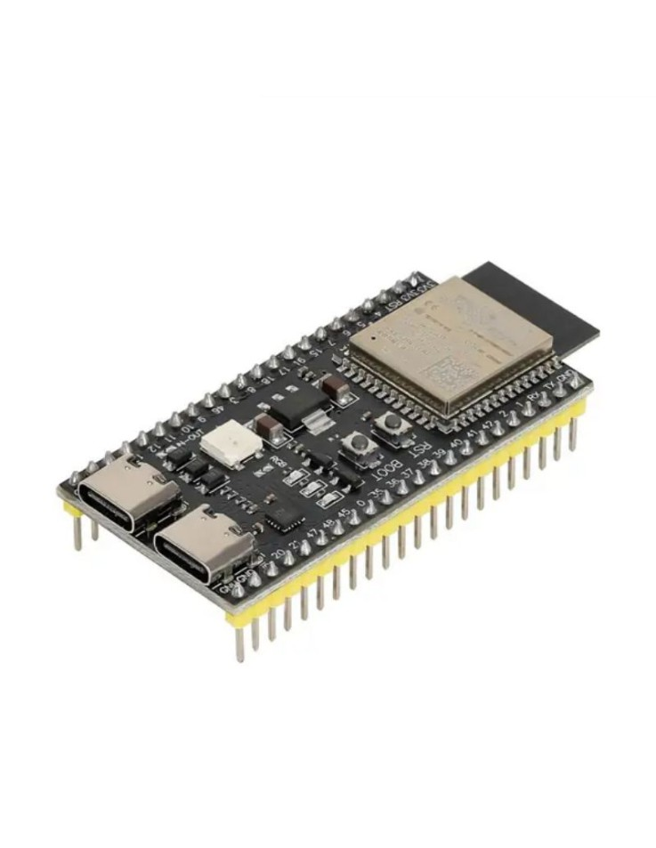
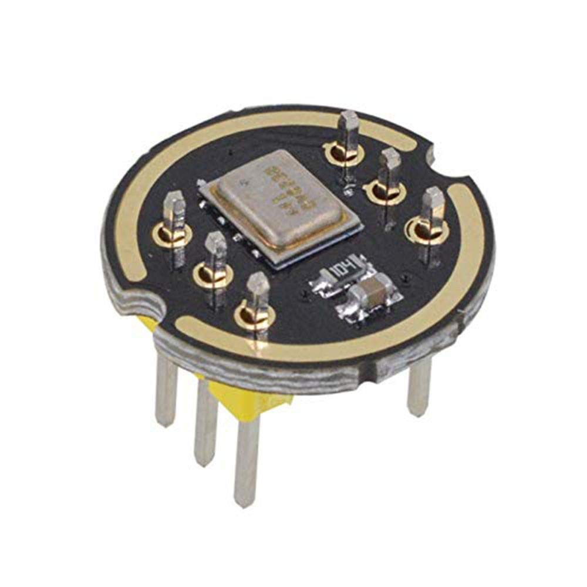
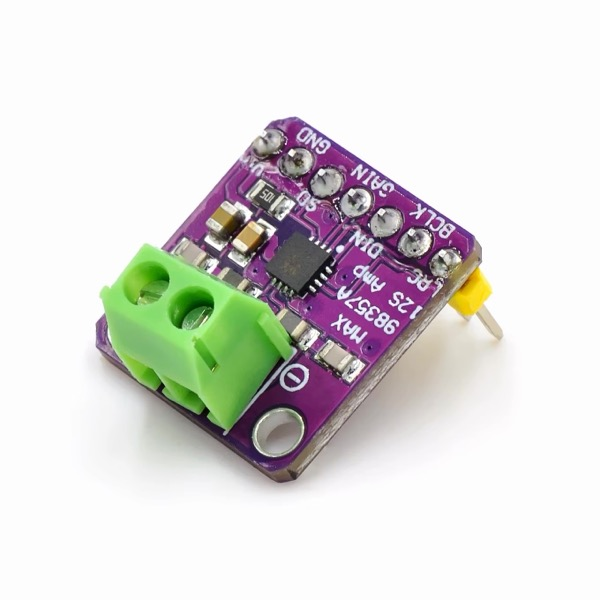
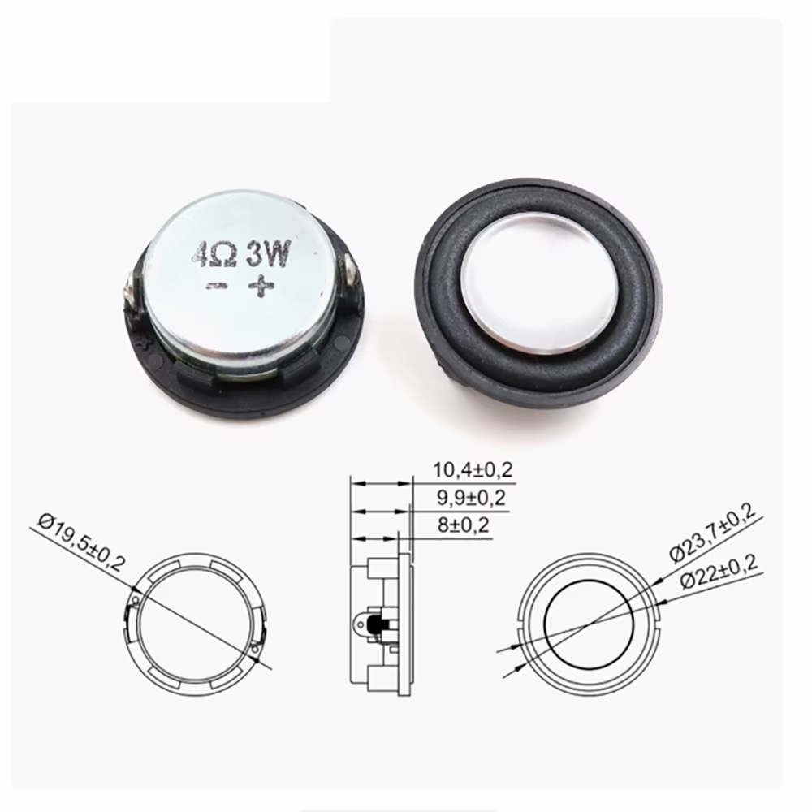
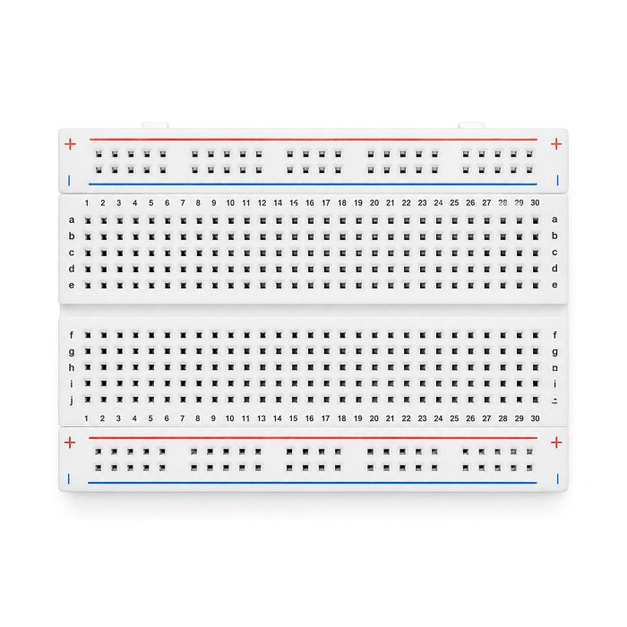
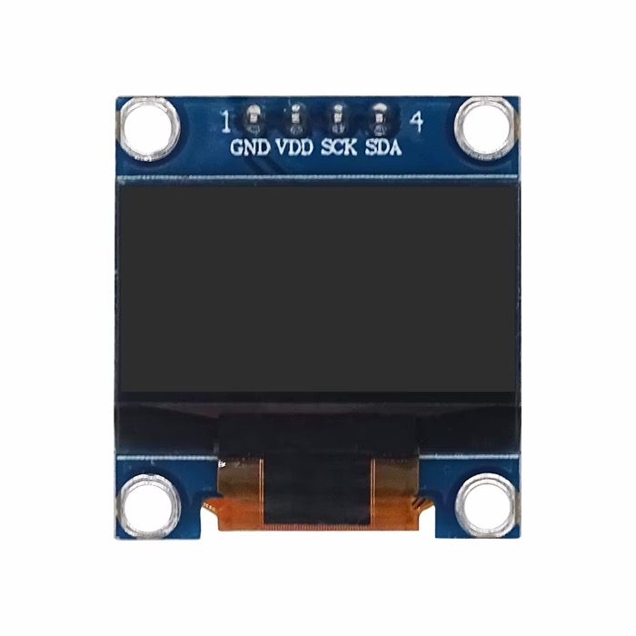
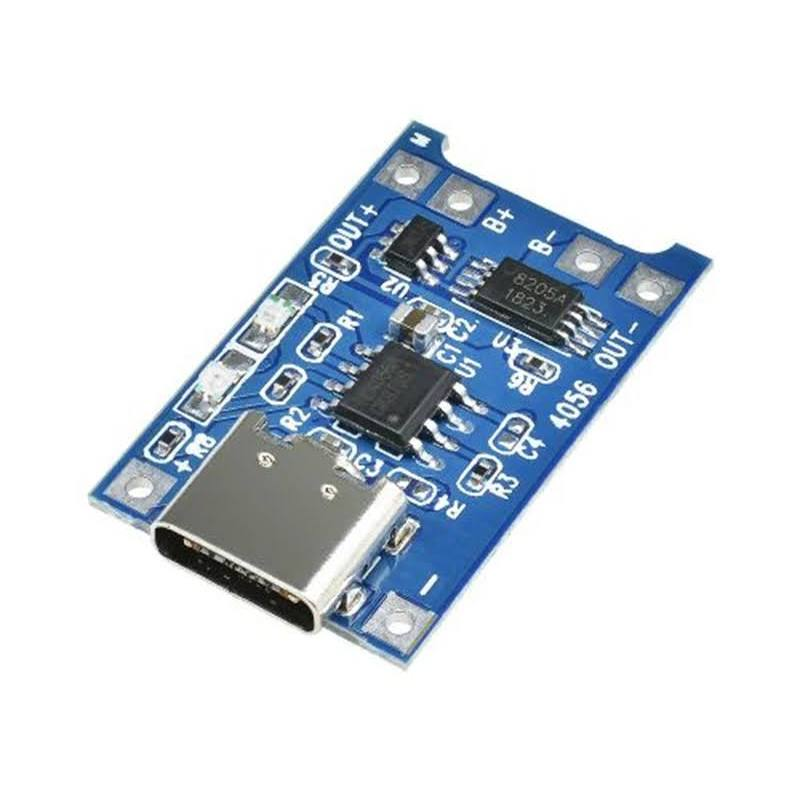
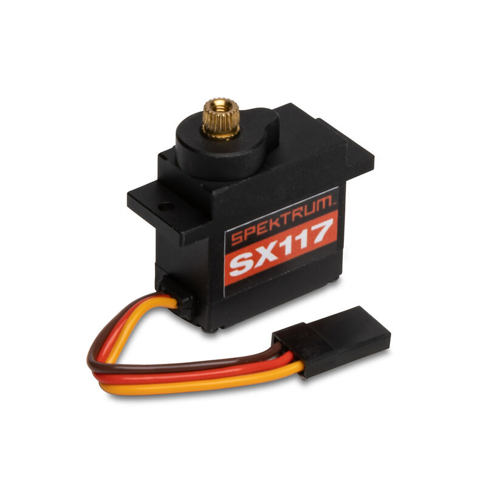

Build your own Desktop AI Companion
A small talking gadget you build yourself. Press a button (or say a wake word), speak, and an ESP32-S3 streams your voice to Google's Gemini Live API and plays the spoken answer through a speaker. No laptop required once it is flashed.
1Parts
Only six parts are required. The rest are optional extras for later.

ESP32-S3-N16R8 boardThe brain. 16 MB flash + 8 MB PSRAM (the R8 matters!).REQUIRED

INMP441 microphoneDigital I2S MEMS mic. Hears you.REQUIRED

MAX98357 amplifierI2S → amplified audio for the speaker.REQUIRED

3 W 4 Ω speakerYour assistant's voice.REQUIRED
 Metal push buttonPush-to-talk / cancel.
Metal push buttonPush-to-talk / cancel.REQUIRED

Breadboard + jumper wiresSolder-free connections. Use the MB102 power module for 5 V.REQUIRED

0.96" OLED face (SSD1306)128×64, I2C, pins GND VDD SCK SDA. Shows the robot's animated face.REQUIRED

18650 + TP4056 chargerBattery power. Needs a 5 V boost converter (not in your kit).LATER

MG90S servoHead nod / ear wiggle. Phase 2.LATER
 N20 motor · TTP223Not needed for this build.
N20 motor · TTP223Not needed for this build.NOT USED
2How it works
Three jobs run at once on the ESP32-S3's two CPU cores.
Conversation states
3Wiring
Double-check every wire before plugging in USB. Swapped power pins can kill a module.
| Part pin | → ESP32-S3 | Notes |
|---|---|---|
INMP441 SCK | GPIO42 | I2S bit clock |
INMP441 WS | GPIO41 | Word select |
INMP441 SD | GPIO40 | Data from mic |
INMP441 L/R | GND | Selects the left channel |
INMP441 VDD / GND | 3V3 / GND | 3.3 V only |
MAX98357 BCLK | GPIO15 | |
MAX98357 LRC | GPIO16 | |
MAX98357 DIN | GPIO7 | Data to amp |
MAX98357 VIN / GND | 5V / GND | Leave SD and GAIN unconnected |
OLED face SDA / SCK | GPIO2 / GPIO1 | 0.96" SSD1306, I2C address 0x3C (SCK = SCL) |
OLED face VDD / GND | 3V3 / GND | 3.3 V only |
| Button leg 1 / leg 2 | GPIO4 / GND | Internal pull-up is used |
4Software setup
Tick the boxes as you go. Your progress is saved in the browser.
- Get a Gemini API key. Create one at aistudio.google.com/apikey. Treat it like a password.
- Install VS Code and the PlatformIO IDE extension (or use the Arduino IDE path below).
- Open the project folder
AI Companionin VS Code. PlatformIO downloads the toolchain on first open (a few minutes). - Create
include/secrets.hfrom the example and fill in WiFi and key (see below). - Wire the hardware following section 3, with USB unplugged.
- Plug in USB-C and click Upload (→ arrow in the status bar).
- Open Serial Monitor at 115200 baud and check for
PSRAM: 8386308 bytes(about 8 MB).
#pragma once
#define WIFI_SSID "your-wifi"
#define WIFI_PASS "your-password"
#define GEMINI_API_KEY "your-gemini-api-key"secrets.hThe project's .gitignore already excludes it. Since the key is stored on the device, create a key with a quota limit.Using Arduino IDE (recommended for beginners)
Ready-made sketches are in arduino/AI_Companion (full robot) and arduino/Face_Demo (screen only). Open the .ino file; the other files open as tabs. Edit secrets.h first.
- Add
https://espressif.github.io/arduino-esp32/package_esp32_index.jsonto Additional boards manager URLs, then install esp32 by Espressif Systems, version 3.x. - Install libraries: WebSockets (Markus Sattler), Adafruit SSD1306, Adafruit GFX Library.
- Tools: Board ESP32S3 Dev Module, USB CDC On Boot Disabled (use the COM port), Flash Size 16MB, PSRAM OPI PSRAM, Partition Scheme 16M Flash (3MB APP/9.9MB FATFS).
- No build flags needed: the WebSocket library's default message size works because the code reassembles fragmented messages.
- After editing
src/orinclude/, regenerate the sketches withsh tools/make_arduino_sketches.sh.
platformio.ini
[env:esp32s3]
platform = https://github.com/pioarduino/platform-espressif32/releases/download/stable/platform-espressif32.zip
board = esp32-s3-devkitc-1
framework = arduino
monitor_speed = 115200
board_build.arduino.memory_type = qio_opi
board_upload.flash_size = 16MB
board_build.partitions = default_16MB.csv
build_flags =
-DBOARD_HAS_PSRAM
-DARDUINO_USB_CDC_ON_BOOT=1
-DWEBSOCKETS_MAX_DATA_SIZE=65536
lib_deps =
links2004/WebSockets@^2.6.15The code
Five small files. The most important ideas are highlighted below.
| File | Job |
|---|---|
include/config.h | Pins, audio rates, model name, voice, system prompt |
src/audio_in.cpp | Reads the INMP441 and converts 24-bit samples to 16-bit |
src/audio_out.cpp | Ring buffer in PSRAM + playback task to the MAX98357 |
src/gemini_live.cpp | WebSocket to Gemini, sends mic audio, decodes reply audio |
src/main.cpp | WiFi, button, and the main loop |
Make it yours: config.h
// Verify against Google's current Live API docs
#define GEMINI_MODEL "models/gemini-2.5-flash-native-audio-preview-09-2025"
#define GEMINI_VOICE "Puck"
#define SYSTEM_PROMPT \
"You are a friendly desktop companion. Keep answers short and conversational."
// Mic too quiet? Lower MIC_SHIFT (e.g. 12). Clipping? Raise it (e.g. 16).
#define MIC_SHIFT 14
// Speaker volume 0..100
#define SPK_VOLUME 60The mic: 24-bit → 16-bit
The INMP441 delivers 24-bit samples inside 32-bit slots. Gemini expects 16-bit, so we shift the bits down.
size_t audioInRead(int16_t *out, size_t count) {
static int32_t raw[MIC_CHUNK_SAMPLES];
size_t got = mic.readBytes((char *)raw, count * sizeof(int32_t)) / sizeof(int32_t);
for (size_t i = 0; i < got; i++) {
int32_t s = raw[i] >> MIC_SHIFT;
out[i] = (int16_t)constrain(s, -32768, 32767);
}
return got;
}Talking to Gemini
Gemini Live is a WebSocket. First you send a setup message; then you stream audio as base64 JSON; replies arrive as JSON with base64 audio.
// 1) ESP32 → Gemini (once)
{ "setup": { "model": "models/…",
"generationConfig": { "responseModalities": ["AUDIO"] },
"systemInstruction": { "parts": [{ "text": "You are a friendly…" }] } } }
// 2) ESP32 → Gemini (every 100 ms)
{ "realtimeInput": { "audio": { "mimeType": "audio/pcm;rate=16000", "data": "<base64>" } } }
// 3) Gemini → ESP32 (as it speaks)
{ "serverContent": { "modelTurn": { "parts": [{ "inlineData": { "data": "<base64 24 kHz PCM>" } }] } } }
{ "serverContent": { "turnComplete": true } }The main loop
void loop() {
if (buttonPressed()) {
if (geminiActive()) geminiEnd(); // second press stops
else geminiBegin(); // first press starts
}
geminiLoop();
if (geminiReady()) {
static int16_t chunk[MIC_CHUNK_SAMPLES];
size_t n = audioInRead(chunk, MIC_CHUNK_SAMPLES);
// Don't feed the speaker's own output back to the model
if (n && audioOutPending() == 0) geminiSendAudio(chunk, n);
} else delay(5);
}src/ and include/.6Test step by step
Prove each piece works before combining them. This saves hours of debugging.
Serial Monitor prints PSRAM: ~8000000 bytes and WiFi OK: 192.168….
Print the loudness of each 100 ms chunk. Silence should be low; clapping should jump by 10× or more.
Play a short beep through the amp. If you hear nothing, recheck VIN, GND and the three I2S wires.
Press the button, wait for Gemini ready, ask “What's the capital of France?” and hear the answer.
Have 10 conversations in a row. Free memory should stay roughly stable.
Expected serial output
PSRAM: 8386308 bytes
.....
WiFi OK: 192.168.1.42
Press the button to talk
Session starting
WS connected
Gemini ready
turn complete7Wake word: say its name
Implemented but not yet tested on hardware. Off by default (WAKEWORD_ENABLED 0 in config.h). The microphone listens locally and only connects to Gemini after it hears the phrase.
- Uses Espressif's ESP-SR / WakeNet through the Arduino
ESP_SRlibrary (included with the esp32 core 3.x). The built-in phrase is “Hi, ESP”. A custom phrase needs a trained model (Espressif service or Edge Impulse) and is not implemented. - To enable: set
WAKEWORD_ENABLED 1, and choose the partition scheme ESP SR 16M (3MB APP/7MB SPIFFS/2.9MB MODEL) (PlatformIO:esp_sr_16.csv). Without the model partition,wakeBegin()fails and the robot falls back to the button. - Flow: sleeping (face shows ZZZ) → name heard →
geminiBegin(). The listener pauses while a session is active and resumes when it ends. AfterSESSION_IDLE_SECONDS(15) of silence the robot hangs up and goes back to sleep. The button still works. - Microphone: now configured as 32-bit stereo (INMP441 on the left slot) so the listener and the audio streamer share one I2S port;
audioInRead()keeps the left samples. - Engines:
WAKE_ENGINE 1= ESP-SR “Hi ESP”.WAKE_ENGINE 2= empty slot for a custom model (Picovoice Porcupine or an Edge Impulse Arduino library): implementwakeBegin/wakeHeard/wakePause/wakeResumeinwakeword.cpp. Not implemented or tested. - Files:
src/wakeword.{h,cpp}, changes inmain.cppandaudio_in.cpp. API calls (ESP_SR.begin/pause/resume,sr_cmd_t) are written from memory of the library; verify against the installed core.
8Battery power (optional)
9Troubleshooting
Upload fails / board not detected
Hold BOOT, tap RST, release BOOT, then upload. Make sure the cable supports data, not just charging, and try the other USB-C port on the board.Board reboots in a loop (Guru Meditation)
Check the PSRAM settings (qio_opi) and that you bought the N16R8 variant. Also make sure nothing is wired to GPIO 35–37.Mic readings are always 0 or constant
CheckL/R is on GND, and that SCK/WS/SD aren't swapped. Power must be 3.3 V.Speaker silent
MAX98357 needs 5 V on VIN and common GND. Confirm BCLK/LRC/DIN. The amp'sSD pin must not be grounded.Speaker is very quiet or distorted
RaiseSPK_VOLUME. Make sure your supply can deliver current: USB from a laptop port may sag at high volume.Stuck on “WS connected” but never “Gemini ready”
Usually a wrong model name or invalid API key. Check the model ID in Google's current Live API docs and regenerate the key if needed.The assistant hears itself and loops
Move the mic away from the speaker, reduce volume, and keep the mic muted while playing (already done inloop()).Audio stutters
Weak WiFi or heap pressure. Move closer to the router and watch free heap/PSRAM in the serial log.10Next ideas
Rewrite
SYSTEM_PROMPT and pick another voice.MG90S nods while it listens and speaks.
Use the button's LED ring: idle, listening, speaking.
Add the boost converter and a 3D-printed case.